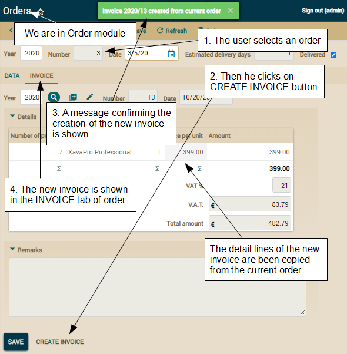
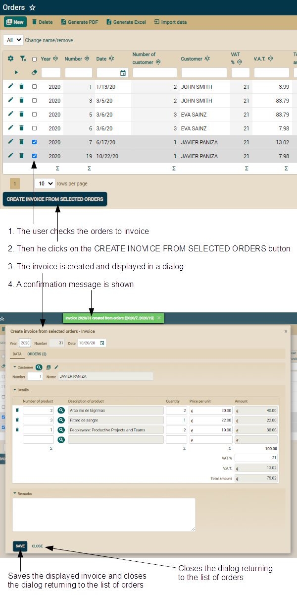

As you can see, first you create
the Java objects in the Java conventional way. Note that you assign it to
instance members. Thus you can use it inside tests. Then, you mark them as
persistent, using the persist() method of the JPA EntityManager.
To obtain the EntityManager you only have to write getManager()
because you have the static import above:
It's a simple loop to remove all
the entities used in the test. To remove an entity in JPA you have to use
the remove() method, but in this case you have to use the merge()
method too (shown as 1). This is because you cannot remove a detached
entity. When you use commit() in createProducts() all
saved entities become detached entities. This is because they continue
being valid Java object but the persistent context (the union between
entities and database) has been lost on commit(), so you must
reattach them to the new persistent context. This concept is easy to
understand seeing the next code:
This test verifies that the first
author in the list is “JAVIER CORCOBADO”, remember to create it before
executing the test. It goes to the detail and asserts that it has a
collection called "products" with 2 products: “Arco iris de lágrimas” and
“Ritmo de sangre”, before executing the test create them and associate
them to "JAVIER CORCOBADO". By the way, now you have learned how to use assertValueInList(),
assertValueInCollection() and assertCollectionRowCount()
methods.
We can use the same technique to test the Category module:
In this case we see that in the
list the first three categories are “MUSIC”, “BOOKS” and “SOFTWARE”.
Remember to create them before executing the test.
You have seen how the technique of using pre-existing data from a test
database allows you to create simpler tests. Starting from a simple test
and further complicating it on demand is a good way to go.
Upon entry of the customer number
the customer name is simply filled with the appropriate value. Since the
test relies on customer 1 with name "JAVIER PANIZA" existing already, you
should create it before running the test. With this the customer 1 is
associated to the current invoice.
And now comes the most tricky part of the test: adding the detail lines:
Testing a collection is the same
as testing any other part of your application. You have to follow the same
steps as an end user with a browser. You have methods such as setValueInCollection(),
assertValueInCollection() or assertCollectionRowCount()
to work with collections. Note how these methods have the collection name
as first argument, and some of them receive the row number with 0 based
index. Remember to create the product 1 and 2 with the corresponding
descriptions before executing this test.
Now that we have the details added, we are going to fill the remaining
data and save the invoice. The remaining data is set by setOtherProperties()
method:
After searching the created
invoice we verify whether the values we have saved are there. If the test
reaches this point your Invoice module works fine. The only
thing remaining is to delete the created invoice so that the test can be
executed again. We do that in the remove() method:
Invoice has been
refactored to use inheritance, also we have used inheritance to add a new
Order entity. Moreover, this
Order entity has a
relationship with
Invoice. You have a lot of new functionality,
therefore you must test all the new features.
Because
Invoice and
Order have a lot of common stuff
(the
CommercialDocument part) we can refactor the tests in order
to use inheritance, thus you avoid the harmful “copy and paste” in your
test code as well.
Creating
an abstract module test
If you examine the test for creating an invoice, from the
testCreate()
method of
InvoiceTest. You can note that testing the creation of
an invoice is exactly the same to testing the creation of an order.
Because, both have year, number, date, customer, details and remarks. So,
here inheritance is a good tool for code reuse.
We are going to rename
InvoiceTest as
CommercialDocumentTest,
then we'll create
InvoiceTest and
OrderTest from it.
See the UML diagram for this idea:

First rename your current
InvoiceTest class to
CommercialDocumentTest,
then make the changes indicated in the next code:
package com.yourcompany.invoicing.tests;
import java.time.*;
import java.time.format.*;
import javax.persistence.*;
import org.openxava.tests.*;
import static org.openxava.jpa.XPersistence.*;
abstract public class CommercialDocumentTest // Add abstract to class definition
extends ModuleTestBase {
private String number;
public CommercialDocumentTest(
String testName,
String moduleName) // moduleName added as constructor argument
{
super(testName, "Invoicing", moduleName); // Send moduleName
}
public void testCreate() throws Exception { ... } // As original
private void addDetails() throws Exception { ... } // As original
private String getNumber() {
if (number == null) {
Query query = getManager().createQuery(
"select max(i.number) from " +
"CommercialDocument i " + // Invoice changed for CommercialDocument
"i where i.year = :year");
query.setParameter("year", LocalDate.now().getYear());
Integer lastNumber = (Integer) query.getSingleResult();
if (lastNumber == null) lastNumber = 0;
number = Integer.toString(lastNumber + 1);
}
return number;
}
private void remove() throws Exception { ... } // As original
private void verifyCreated() throws Exception { ... } // As original
private void save() throws Exception { ... } // As original
private void setOtherProperties() throws Exception { ... } // As original
private void chooseCustomer() throws Exception { ... } // As original
private void verifyDefaultValues() throws Exception { ... } // As original
private String getCurrentYear() { ... } // As original
private String getCurrentDate() { ... } // As original
}
As you see you have to do a few changes in order to adapt
CommercialDocumentTest.
First, you declared it as an abstract class. This way this class is not
executed by OpenXava Studio as a JUnit test. It is only valid as base
class for creating tests, but it is not a test itself.
Another important change is in the constructor, where you now use
moduleName
instead of “Invoice”, thus you can use this test for
Order,
Invoice
or whatever other module you want. The other change is a simple detail:
you have to change “Invoice” for “CommercialDocument” in the query to get
the next number.
Now you have a base class ready to create the module tests for
Order
and
Invoice. Let's do it.
Using
the abstract module test to create concrete module tests
Creating your first version of
OrderTest and
InvoiceTest
is just a matter of extending from
CommercialDocumentTest.
Nothing more. See the
InvoiceTest code:
package com.yourcompany.invoicing.tests;
public class InvoiceTest extends CommercialDocumentTest {
public InvoiceTest(String testName) {
super(testName, "Invoice");
}
}
And
OrderTest:
package com.yourcompany.invoicing.tests;
public class OrderTest extends CommercialDocumentTest {
public OrderTest(String testName) {
super(testName, "Order");
}
}
Execute these two tests and you will see how
testCreate(),
inherited from
CommercialDocumentTest, is executed in both
cases, against its corresponding module. With this we are testing the
common behavior of
Order and
Invoice. Let's test the
different cases for them.
Adding
new tests to the extended module test
So far we tested how to create an invoice and an order. In this section
we'll test also how to add orders to an invoice in the
Invoice
module, and how to set the invoice to an order from the
Order
module.
To test how to add an order to an invoice, add the
testAddOrders()
method to
InvoiceTest:
// This test assumes that at least one invoice and order order already exist
public void testAddOrders() throws Exception {
login("admin", "admin");
assertListNotEmpty(); // This test assumes that some invoices already exist
execute("List.orderBy", "property=number"); // To always work with the same order
execute("List.viewDetail", "row=0"); // Goes to detail mode editing the first invoice
execute("Sections.change", "activeSection=1"); // Changes to tab 1
assertCollectionRowCount("orders", 0); // This invoice has no orders
execute("Collection.add", // Clicks on the button for adding a new order, this takes
"viewObject=xava_view_section1_orders"); // you to a list of orders
execute("AddToCollection.add", "row=0"); // Chooses the first order in the list
assertCollectionRowCount("orders", 1); // Order added to the invoice
checkRowCollection("orders", 0); // Checks the order, to remove it
execute("Collection.removeSelected", // Removes the recently added order
"viewObject=xava_view_section1_orders");
assertCollectionRowCount("orders", 0); // The order has been removed
}
In this case we rely on the fact that there is at least one
invoice, and that the first invoice in the list has no orders. Before
running this test, if you have no invoices, create one with no orders, or
if you already have invoices, be sure that the first one has no orders.
To test how to assign an invoice to an order add the
testSetInvoice()
method to
OrderTest:
public void testSetInvoice() throws Exception {
login("admin", "admin");
assertListNotEmpty(); // This test assumes that some orders already exist
execute("List.viewDetail", "row=0"); // Goes to detail mode editing the first invoice
execute("Sections.change", "activeSection=1"); // Changes to tab 1
assertValue("invoice.number", ""); // This order has no
assertValue("invoice.year", ""); // invoice assigned yet
execute("Reference.search", // Clicks on the button to search the invoice, this
"keyProperty=invoice.year"); // takes you to a list of invoices
execute("List.orderBy", "property=number"); // To sort the list of invoices
String year = getValueInList(0, "year"); // Stores the year and number of
String number = getValueInList(0, "number"); // the first invoice in the list
execute("ReferenceSearch.choose", "row=0"); // Chooses the first invoice
assertValue("invoice.year", year); // On return to order detail we verify
assertValue("invoice.number", number); // the invoice has been selected
}
In this case we rely on the fact that there is at least one order,
and that the first order in the list has no invoice. Before running this
test, if you have no orders, create one with no invoice, or if you already
have orders, be sure that the first one has no invoice.
With this you have your tests ready. Just execute them, and you'll get the
next result:

Note that the base test
CommercialDocumentTest is not shown
because it is abstract. And the
testCreate() method of
CommercialDocumentTest
is executed for both
InvoiceTest and
OrderTest.
Not only have you adapted your testing code to the improved code for
Invoicing,
but you have also learned how to use inheritance in the test code as well.
We are going to write the JUnit
code for the
Basic business logic section. Remember, the code is
not done if it has no tests. You can write the tests before, during or
after coding. But you always have to write the tests.
The test code here is not only to give you a good example, but also to
teach you ways to test different cases in your OpenXava application.
Modifying
existing tests
Creating a new test for each new case seems like a good idea from a
structural viewpoint, but in most cases it is not practical because in
doing so your test code would grow very fast, and execution of all the
tests for your application would take a substantial amount of time.
The more pragmatic approach is to modify the existing test code to cover
all the new cases we have developed. Let's do it in this way.
In our case, most of the code for this lesson applies to
CommercialDocument,
so we are going to modify the
testCreate() method of
CommercialDocumentTest
to match the new functionality. We leave the
testCreate() method
as you see in the next code:
public void testCreate() throws Exception {
login("admin", "admin");
calculateNumber(); // Added to calculate the next document number first
verifyDefaultValues();
chooseCustomer();
addDetails();
setOtherProperties();
save();
verifyEstimatedProfit(); // To test @Formula
verifyCreated();
remove();
}
As you see, we add a new line in the beginning to calculate the
next document number, and call the new
verifyEstimatedProfit()
method.
Now it's more convenient to calculate the next document number in the
beginning to use it during the test. To do this, change the old
getNumber()
method for the following two methods:
private void calculateNumber() {
Query query = getManager().createQuery("select max(i.number) from " +
model + // We change CommercialDocument for a variable
" i where i.year = :year");
query.setParameter("year", LocalDate.now().getYear());
Integer lastNumber = (Integer) query.getSingleResult();
if (lastNumber == null) lastNumber = 0;
number = Integer.toString(lastNumber + 1);
}
private String getNumber() {
return number;
}
Previously we only had
getNumber() to calculate and
return the number, now we have a method to calculate (
calculateNumber()),
and another one to return the result (
getNumber()). You can note
that the calculation logic has a little change, instead of using
“CommercialDocument” as the source of the query we use
model, a
variable. This is because now the numeration for invoices and orders are
separated. We fill this variable, a field of the test class, in the test
constructor, just as shows in the next code:
private String model; // The model name to use in the query. Can be “Invoice” or “Order”
public CommercialDocumentTest(String testName, String moduleName) {
super(testName, "Invoicing", moduleName);
this.model = moduleName; // In this case module name matches model
}
In this case module name,
Invoice or
Order,
coincides with model name,
Invoice or
Order, so the
easiest way to get the model name is from the module name.
Let's see the actual testing of the new functionality.
Testing
default values, calculated and @Calculation properties
In this lesson we have done some modifications related to default values.
Now the default value for number is not calculated by means of
@DefaultValueCalculator
instead we use a JPA callback method. To test this case we have to modify
the
verifyDefaultValues() method as you see:
private void verifyDefaultValues() throws Exception {
execute("CRUD.new");
assertValue("year", getCurrentYear());
// assertValue("number", getNumber()); // Now number has no initial value
assertValue("number", ""); // on create a new document
assertValue("date", getCurrentDate());
}
We verify that
number the has no initial value, because now
the number is not calculated until the document is saved (
Multiuser
safe default value calculation section). When the document (invoice
or order) will be saved we'll verify that the
number is
calculated.
When the detail is added we can
test the
amount for
Detail calculation (
Simple
calculated property section), the default value calculation for
pricePerUnit
(
Using
@DefaultValueCalculator section) and the amount properties of the
document (
Total
properties of a collection section). Among the total properties we
test
vatPercentage whose default value is calculated reading
from a properties file. We'll test all this with a few modifications in
the already existing
addDetails() method:
private void addDetails() throws Exception {
assertCollectionRowCount("details", 0);
// Before running this test code make sure
// product 1 has 19 as price, and
// product 2 has 20 as price
// Adding a detail line
setValueInCollection("details", 0, "product.number", "1");
assertValueInCollection("details", 0,
"product.description", "Peopleware: Productive Projects and Teams");
assertValueInCollection("details", 0,
"pricePerUnit", "19.00"); // @DefaultValueCalculator
setValueInCollection("details", 0, "quantity", "2");
assertValueInCollection("details", 0,
"amount", "38.00"); // Calculated property, section 'Simple calculated property'
// Verifying total properties of collection
assertTotalInCollection("details", 0, "amount", "38.00"); // Sum of amounts using +
assertTotalInCollection("details", 1, "amount", "21"); // Default value from properties file
assertTotalInCollection("details", 2, "amount", "7.98"); // VAT, with @Calculation
assertTotalInCollection("details", 3, "amount", "45.98"); // Total amount, with @Calculation
// Adding another detail
setValueInCollection("details", 1, "product.number", "2");
assertValueInCollection("details", 1, "product.description", "Arco iris de lágrimas");
assertValueInCollection("details", 1, "pricePerUnit", "20.00");
setValueInCollection("details", 1, "pricePerUnit", "10.00"); // Modifying the default value
setValueInCollection("details", 1, "quantity", "1");
assertValueInCollection("details", 1, "amount", "10.00");
assertCollectionRowCount("details", 2); // Now we have 2 rows
// Verifying total properties of collection
assertTotalInCollection("details", 0, "amount", "48.00");
assertTotalInCollection("details", 1, "amount", "21");
assertTotalInCollection("details", 2, "amount", "10.08");
assertTotalInCollection("details", 3, "amount", "58.08");
}
As you see, with these simple modifications we test most of our
new code. What remains is only the
estimatedProfit and
deliveryDays
properties. We'll test them in the next sections.
Testing
@Formula
In section
Database
logic (@Formula) we have created a property that uses
@Formula,
estimatedProfit. This property is shown only in list mode.
Obviously, the simplest way to test it is by going to list mode and
verifying that the value for this property is the expected one. You have
already seen that in
testCreate() we call the
verifyEstimatedProfit().
Let's see its code:
private void verifyEstimatedProfit() throws Exception {
execute("Mode.list"); // Changes to list mode
setConditionValues(new String [] { // Filters to see in the list
getCurrentYear(), getNumber() // only the newly created document
});
execute("List.filter"); // Does the filter
assertValueInList(0, 0, getCurrentYear()); // Verifies that
assertValueInList(0, 1, getNumber()); // the filter has worked
assertValueInList(0, "estimatedProfit", "5.81"); // Asserts estimatedProfit
execute("List.viewDetail", "row=0"); // Goes to detail mode
}
Because we now go to list mode and then we go back to detail. We
have to make a small modification to the
verifyCreated()
method, that is executed just after
verifyEstimatedProfit().
Let's see the modification in the next code:
private void verifyCreated() throws Exception {
// setValue("year", getCurrentYear()); // We delete these lines
// setValue("number", getNumber()); // for searching the document
// execute("CRUD.refresh"); // because we already searched it with list mode
// The rest of the test...
...
We remove these lines because now it's not necessary to search the
newly created document. Now in the
verifyEstimatedProfit()
method we went to list mode and chose the document, so we are already
editing the document.
Testing
calculated and persistent synchronized properties
In the
Synchronizing
persistent and calculated properties section we used a JPA
callback method in
Order to have a persistent property,
deliveryDays,
synchronized with a calculated one,
estimatedDeliveryDays. The
deliveryDays property is only shown in list mode.
Go to
OrderTest class and add a new method
testDeliveryDays():
public void testDeliveryDays() throws Exception {
login("admin", "admin");
assertListNotEmpty();
execute("List.viewDetail", "row=0");
setValue("date", "6/5/20");
assertValue("estimatedDeliveryDays", "1");
setValue("date", "6/6/20");
assertValue("estimatedDeliveryDays", "3");
setValue("date", "6/7/20");
assertValue("estimatedDeliveryDays", "2");
execute("CRUD.save");
execute("Mode.list"); // To verify that deliveryDays is synchronized
assertValueInList(0, "deliveryDays", "2");
execute("List.viewDetail", "row=0");
setValue("date", "1/13/20");
assertValue("estimatedDeliveryDays", "7");
execute("CRUD.save");
execute("Mode.list"); // To verify that deliveryDays is synchronized
assertValueInList(0, "deliveryDays", "7");
}
We try several values for
date in order to verify that
estimatedDeliveryDays
is correctly calculated each time, moreover we go to list mode to verify
that
deliveryDays has the correct value so both properties are
synchronized.
Congratulations! Now you have
your tests up to date with your code. It's a good time to run all the
tests for your application.
Testing
validation
The
source code below is to write on top of code from section Advanced
validation, until new notice.
Our goal is not to develop a
huge quantity of software, but to create quality software. At the end of
the day, if you create quality software you will deliver more
functionality, because you will spend more time on new and exciting
things and less time on debugging legions of bugs. And you know that the
only way to quality is automated testing, so lets update our test code.
Testing
validation for adding to a collection
Recall that we have refined the code in a way that the user cannot
assign orders to an invoice if the orders are not marked as delivered
yet. After that, your current
testAddOrders() of
InvoiceTest
can fail, because it tries to add the first order, and this first order
might not be marked as delivered yet.
Let's modify the test method to run correctly and also to test your new
validation functionality:
public void testAddOrders() throws Exception {
login("admin", "admin");
assertListNotEmpty();
execute("List.orderBy", "property=number");
execute("List.viewDetail", "row=0");
execute("Sections.change", "activeSection=1");
assertCollectionRowCount("orders", 0);
execute("Collection.add",
"viewObject=xava_view_section1_orders");
// execute("AddToCollection.add", "row=0"); // Now we don't select randomly
checkFirstOrderWithDeliveredEquals("Delivered"); // Selects one delivered order
checkFirstOrderWithDeliveredEquals(""); // Selects one not delivered order
execute("AddToCollection.add"); // We try to add both
assertError( // An error, because the not delivered order cannot be added
"ERROR! 1 element(s) NOT added to Orders of Invoice");
assertMessage( // A confirm message, because the delivered order has been added
"1 element(s) added to Orders of Invoice");
assertCollectionRowCount("orders", 1);
checkRowCollection("orders", 0);
execute("Collection.removeSelected",
"viewObject=xava_view_section1_orders");
assertCollectionRowCount("orders", 0);
}
We have modified the part for selecting orders to add. Before we
selected the first order, no matter if it's delivered or not. Now we
select one order delivered and one order not delivered. In this way we
test if the delivered one is added and the not delivered one is
rejected.
The missing piece here is the way to check the orders. This is the task
of the
checkFirstOrderWithDeliveredEquals() method:
private void checkFirstOrderWithDeliveredEquals(String value) throws Exception {
int c = getListRowCount(); // The total displayed rows in list
for (int i=0; i<c; i++) {
if (value.equals(
getValueInList(i, 12))) // 12 is the 'delivered' column
{
checkRow(i);
return;
}
}
fail("There must be at least one row with delivered=" + value);
}
Here you see a good technique to do a loop over the displayed list
elements in order to check them, get data or do whatever you want with
the list data. In order this test works the first invoice has to have no
deliveries and moreover it must be at least one order delivered, but not
the first one.
Testing
validation assigning a reference and validation on removal
From the
Invoice module the user cannot add orders to an
invoice if they are not delivered yet, therefore, from the
Order
module the user cannot assign an invoice to an order if the order is not
delivered. That is, we have to test the other side of the association
too. We'll do it by modifying the existing
testSetInvoice() of
OrderTest.
Moreover, we'll use this case to test the remove validation we
introduced in sections
Validating
on removal with @RemoveValidator and
Validating
on removal with a JPA callback method. There we modified the
application to prevent the user from removing an order which has an
invoice associated with it. Now we will test this restriction.
The revision of
testSetInvoice() of
OrderTest with all
these enhancements is below:
public void testSetInvoice() throws Exception {
login("admin", "admin");
assertListNotEmpty();
execute("List.orderBy", "property=number"); // To set the list order
execute("List.viewDetail", "row=0");
assertValue("delivered", "false"); // The order must be not delivered
execute("Sections.change", "activeSection=1");
assertValue("invoice.number", "");
assertValue("invoice.year", "");
execute("Reference.search",
"keyProperty=invoice.year");
execute("List.orderBy", "property=number");
String year = getValueInList(0, "year");
String number = getValueInList(0, "number");
execute("ReferenceSearch.choose", "row=0");
assertValue("invoice.year", year);
assertValue("invoice.number", number);
// Not delivered order cannot have invoice
execute("CRUD.save");
assertErrorsCount(1); // We cannot save because it is not delivered
setValue("delivered", "true");
execute("CRUD.save"); // With delivered=true we can save the order
assertNoErrors();
// Order with invoice cannot be deleted
execute("Mode.list"); // We go to list and
execute("CRUD.deleteRow", "row=0"); // we delete the saved order
assertError("Impossible to remove Order because: " + // We cannot delete because
"An order with an invoice cannot be deleted"); // it has an invoice associated
// Restoring original values
execute("List.viewDetail", "row=0");
setValue("invoice.year", "");
setValue("delivered", "false");
execute("CRUD.save");
assertNoErrors();
}
The original test only searched for an invoice, but did not even
save. Now, we added test code at the end which tries to save the order
with delivered=false and with delivered=true, in this way we test the
validation. After that, we try to delete the order, that has an invoice.
Thus we test the validation on removal too. Before running this test
make sure that first order is not delivered and has not invoice.
Testing
the custom Bean Validation
The last step is to test the
ISBN Bean Validation, which uses
a REST service to do validation. We simply have to write a test case
that tries to assign an incorrect, a nonexistent and a correct ISBN to a
product and checks the results for these cases. To do so let's add a
testISBNValidator()
method to
ProductTest.
public void testISBNValidator() throws Exception {
login("admin", "admin");
// Searching the product1
execute("CRUD.new");
setValue("number", Integer.toString(product1.getNumber()));
execute("CRUD.refresh");
assertValue("description", "JUNIT Product 1");
assertValue("isbn", "");
// With incorrect ISBN format
setValue("isbn", "1111");
execute("CRUD.save"); // Fails because of format (apache commons validator)
assertError("1111 is not a valid value for ISBN of " +
"Product: ISBN invalid or nonexistent");
// ISBN does not exist though it has correct format
setValue("isbn", "9791034369997");
execute("CRUD.save"); // Fails because it does not exist (REST service)
assertError("9791034369997 is not a valid value for ISBN of " +
"Product: ISBN invalid or nonexistent");
// ISBN exists
setValue("isbn", "9780932633439");
execute("CRUD.save"); // It does not fail
assertNoErrors();
}
Surely the manual testing you were doing during the development of
the
@ISBN validator was like the one above. Therefore, if
you
write your JUnit test before the application code, you can use it
as you proceed. This is more efficient than repeating the test
procedures by hand using the browser over and over again.
Note that if you use
@ISBN(search=false) this test will not work
because it checks the result of the REST service. So, you have to use
the
@ISBN annotation of the
isbn property without the
search attribute in order to run this test successfully.
Now execute all the tests for your
Invoicing application to
verify that everything works as expected.
Testing
of refining the standard behavior
The source code below is to write on top
of code from section Refining the standard behavior, until
new notice.
We have refined the way your
application deletes entities, moreover we added two custom modules, the
trash modules. Before we move ahead, we must write the tests for the new
features.
Testing
the customized delete behavior
We do not have to write new tests for the deletion, because the current
testing code already tests the delete functionality. Usually, when you
change the implementation of some functionality but not their use from
the user viewpoint, as in our current case, you do not need to add new
tests.
Just run all the tests for your application, and adjust the needed
details in order for them to work properly. In fact you only need to
change “CRUD.delete” to “Invoicing.delete” and “CRUD.deleteSelected” to
“Invoicing.deleteSelected” in a few tests. The next code summarizes the
changes you need to apply to your current test code:
// In CustomerTest.java file
public class CustomerTest extends ModuleTestBase {
...
public void testCreateReadUpdateDelete() throws Exception {
...
// Delete
// execute("CRUD.delete");
execute("Invoicing.delete");
assertMessage("Customer deleted successfully");
}
...
}
// In CommercialDocumentTest.java file
abstract public class CommercialDocumentTest extends ModuleTestBase {
...
private void remove() throws Exception {
// execute("CRUD.delete");
execute("Invoicing.delete");
assertNoErrors();
}
...
}
// In ProductTest.java file
public class ProductTest extends ModuleTestBase {
...
public void testRemoveFromList() throws Exception {
...
// execute("CRUD.deleteSelected");
execute("Invoicing.deleteSelected");
...
}
...
}
// In OrderTest.java file
public class OrderTest extends CommercialDocumentTest {
...
public void testSetInvoice() throws Exception {
...
//execute("CRUD.deleteRow", "row=0");
execute("Invoicing.deleteRow", "row=0");
...
}
}
After these changes all your tests will work properly, and this
verifies that your refined delete actions preserve the original
semantics. Only the implementation has changed.
Testing
several modules in the same test method
You also have to test the new custom modules,
OrderTrash and
InvoiceTrash.
Additionally, we will also verify that the removal logic works fine, and
that the entities are only marked as deleted and not actually removed.
To test the InvoiceTrash module we will follow the steps below:
- Start in the Invoice module.
- Delete an invoice from detail mode and verify that it has been
deleted.
- Delete an invoice from list mode and verify that it has been
deleted.
- Go to the InvoiceTrash module.
- Verify that it contains the two deleted invoices.
- Restore them and verify that they disappear from the trash list.
- Come back to the Invoice module.
- Verify that the two restored invoices are in the list.
You can see that we start in the
Invoice module. Moreover, you
surely have realized that the logic to test the
Order module
is exactly the same. So instead of creating the new test classes,
OrderTrashTest
and
InvoiceTrashTest, we'll just add the test in the already
existing
CommercialDocumentTest. Thus we reuse the same code
for testing
OrderTrash,
InvoiceTrash, and the custom
delete logic. Add the next
testTrash() method to
CommercialDocumentTest:
public void testTrash() throws Exception {
login("admin", "admin");
assertListOnlyOnePage(); // Only one page in the list, that is less than 10 rows
execute("List.orderBy", "property=number"); // We order the list by number
// Deleting from detail mode
int initialRowCount = getListRowCount();
String year1 = getValueInList(0, 0);
String number1 = getValueInList(0, 1);
execute("List.viewDetail", "row=0");
execute("Invoicing.delete");
execute("Mode.list");
assertListRowCount(initialRowCount - 1); // There is one row less
assertDocumentNotInList(year1, number1); // The deleted entity is not in the list
// Deleting from list mode
String year2 = getValueInList(0, 0);
String number2 = getValueInList(0, 1);
checkRow(0);
execute("Invoicing.deleteSelected");
assertListRowCount(initialRowCount - 2); // There are 2 fewer rows
assertDocumentNotInList(year2, number2); // The other deleted entity is not in the list now
// Verifying deleted entities are in the trash module
changeModule(model + "Trash"); // model can be 'Invoice' or 'Order'
assertListOnlyOnePage();
int initialTrashRowCount = getListRowCount();
assertDocumentInList(year1, number1); // We verify that the deleted entities
assertDocumentInList(year2, number2); // are in the trash module list
// Restoring using row action
int row1 = getDocumentRowInList(year1, number1);
execute("Trash.restore", "row=" + row1);
assertListRowCount(initialTrashRowCount - 1); // 1 row less after restoring
assertDocumentNotInList(year1, number1); // The restored entity is no longer shown
// in the trash module list
// Restoring by checking a row and using the bottom button
int row2 = getDocumentRowInList(year2, number2);
checkRow(row2);
execute("Trash.restore");
assertListRowCount(initialTrashRowCount - 2); // 2 fewer rows
assertDocumentNotInList(year2, number2); // The restored entity is no longer shown
// in the trash module list
// Verifying entities are restored
changeModule(model);
assertListRowCount(initialRowCount); // After restoring we have the original
assertDocumentInList(year1, number1); // rows again
assertDocumentInList(year2, number2);
}
As you see the
testTrash() follows the aforesaid steps.
Note how using the
changeModule() method from
ModuleTestBase
your test can change to another module. We use it to switch to the trash
module, and then come back.
In our tests we're using a few auxiliary methods you have to add to
CommercialDocumentTest.
The first is
assertListOnlyOnePage() to assert that the list
is adequate for running this test.
private void assertListOnlyOnePage() throws Exception {
assertListNotEmpty(); // This is from ModuleTestBase
assertTrue("Must be less than 10 rows to run this test",
getListRowCount() < 10);
}
We need to have less than 10 rows, because the
getListRowCount()
method only informs about rows that are displayed. If you have more than
10 rows (10 is the default row count per page) you cannot take advantage
of
getListRowCount(), it would always return 10.
The remaining methods are for verifying if some order or invoice is (or
is not) in the list. See them:
private void assertDocumentNotInList(String year, String number)
throws Exception
{
assertTrue(
"Document " + year + "/" + number +" must not be in list",
getDocumentRowInList(year, number) < 0);
}
private void assertDocumentInList(String year, String number)
throws Exception
{
assertTrue(
"Document " + year + "/" + number + " must be in list",
getDocumentRowInList(year, number) >= 0);
}
private int getDocumentRowInList(String year, String number)
throws Exception
{
int c = getListRowCount();
for (int i=0; i<c; i++) {
if ( year.equals(getValueInList(i, 0)) &&
number.equals(getValueInList(i, 1)))
{
return i;
}
}
return -1;
}
You can see in
getDocumentRowInList() how to create a
loop for searching after a specific value in a list.
Now you can run all the tests for your
Invoicing application.
Everything should be green.
Testing behavior & business
logic
The
source code below is to write on top of code from section Behavior
& business logic, until new notice.
The code we have written in the
Behavior & business logic section is not complete until we
write the tests. Remember, all new code must have its corresponding test
code. Let's write tests for the two new actions.
Testing the detail mode
action
First we'll test the
Order.createInvoice action, the action for
creating an invoice from the displayed order in detail mode. Then next
image shows how this process works:

Now we're going to write a test to verify that it really works in this
way. Add the
testCreateInvoiceFromOrder() method to the
OrderTest
class:
public void testCreateInvoiceFromOrder() throws Exception {
login("admin", "admin");
// Looking for the order
searchOrderSusceptibleToBeInvoiced(); // Locates an order
assertValue("delivered", "true"); // The order is delivered
int orderDetailsCount = getCollectionRowCount("details"); // Takes note of the
// details count of the order
execute("Sections.change", "activeSection=1"); // The section of the invoice
assertValue("invoice.year", ""); // There is no invoice yet
assertValue("invoice.number", ""); // in this order
// Creating the invoice
execute("Order.createInvoice"); // Executes the action under test (1)
String invoiceYear = getValue("invoice.year"); // Verifies that now
assertTrue("Invoice year must have value", // there is an invoice in
!Is.emptyString(invoiceYear)); // the invoice tab (2)
String invoiceNumber = getValue("invoice.number");
assertTrue("Invoice number must have value",
!Is.emptyString(invoiceNumber)); // Is.emptyString() is from org.openxava.util
assertMessage("Invoice " + invoiceYear + "/" + invoiceNumber +
" created from current order"); // The confirmation message (3)
assertCollectionRowCount("invoice.details", // The newly created invoice
orderDetailsCount); // has the same details count as the order (4)
// Restoring the order for running the test the next time
setValue("invoice.year", "");
assertValue("invoice.number", "");
assertCollectionRowCount("invoice.details", 0);
execute("CRUD.save");
assertNoErrors();
}
As you can see, the test clicks the button for executing
Order.createInvoice action (1), then verifies that an invoice has
been created, is displayed in the invoice tab (2), and has the same
number of detail lines as the current order (4). The test also verifies
that the correct confirmation message is generated (3).
To run this test it's needed to choose an order suitable to be invoiced.
This is done in the
searchOrderSusceptibleToBeInvoiced() method
that we are going to examine in the next section.
Finding
an entity for testing using list mode and JPA
To select an order suitable for our test we'll use JPA to determine the
year and number of that order, and then we'll use the list mode to
select the order to be edited in detail mode. Below the methods to
implement this:
private void searchOrderSusceptibleToBeInvoiced() throws Exception {
searchOrderUsingList("delivered = true and invoice = null"); // Sends
} // the condition, in this case to search for a delivered order with no invoice
private void searchOrderUsingList(String condition) throws Exception {
Order order = findOrder(condition); // Finds the order with the condition using JPA
String year = String.valueOf(order.getYear());
String number = String.valueOf(order.getNumber());
setConditionValues(new String [] { year, number }); // Fills the year and number
execute("List.filter"); // and clicks the filter button of the list
assertListRowCount(1); // Only one row corresponding to the desired order
execute("List.viewDetail", "row=0"); // To see the order in detail mode
assertValue("year", year); // Verifies that the edited order
assertValue("number", number); // is the desired one
}
private Order findOrder(String condition) {
Query query = XPersistence.getManager().createQuery( // Creates a JPA query
"from Order o where o.deleted = false and " // from the condition. Note the
+ condition); // deleted = false for excluding deleted orders
List<Order> orders = query.getResultList();
if (orders.isEmpty()) { // It's needed at least one order with the condition
fail("To run this test you must have some order with " + condition);
}
return orders.get(0);
}
Also you have the next imports to
OrderTest in order it
compiles:
import java.util.*;
import javax.persistence.*;
import org.openxava.jpa.*;
import org.openxava.util.*;
import com.yourcompany.invoicing.model.*;
The
searchOrderSusceptibleToBeInvoiced() method simply
calls a more generic method,
searchOrderUsingList(), to locate
an entity from a condition. The
searchOrderUsingList() method
obtains an
Order entity by means of
findOrder(), then it
uses the list to filter by year and number of this
Order before
finally going to detail mode. The
findOrder() method uses plain
JPA for searching.
Combining list mode and JPA can be a very useful technique in some
cases. We will continue to use the methods
searchOrderUsingList()
and
findOrder() in the remaining tests.
Testing hiding of the
action
We refined the
Order module to show the action for creating an
invoice only when the displayed order would be suitable to be invoiced.
This is the test method for this, add it to
OrderTest:
public void testHidesCreateInvoiceFromOrderWhenNotApplicable() throws Exception {
login("admin", "admin");
searchOrderUsingList(
"delivered = true and invoice <> null"); // If the order already has an invoice
assertNoAction("Order.createInvoice"); // it cannot be invoiced again
execute("Mode.list");
searchOrderUsingList(
"delivered = false and invoice = null"); // If the order is not delivered
assertNoAction("Order.createInvoice"); // it cannot be invoiced
execute("CRUD.new"); // If the order is not saved yet
assertNoAction("Order.createInvoice"); // it cannot be invoiced
}
We test three cases when the button for creating an invoice should
not be visible. Note the usage of
assertNoAction() for asking if
a link or button for an action is not present in the user interface.
Here we are reusing the
searchOrderUsingList() method developed
in the previous section.
We have already implicitly tested that the button is present when
applicable in our previous test, because
execute() fails if the
action is not in the user interface.
Testing the list mode
action
Now we'll test the
Order.createInvoiceFromSelectedOrders action,
the action for creating an invoice from multiple selected orders in list
mode. Remember that this process works in this way:

Let's write a test to verify that it works in just this way. Add the
testCreateInvoiceFromSelectedOrders() method to the
OrderTest
class:
public void testCreateInvoiceFromSelectedOrders() throws Exception {
login("admin", "admin");
assertOrder(2021, 3, 2, "162.14"); // Order 2021/3 has 2 lines and 162.14 as total amount
assertOrder(2021, 4, 1, "48.40"); // Order 2021/4 has 1 line and 48.40 as total amount
execute("List.orderBy", "property=number"); // Sorts the list by number
checkRow( // Checks the row from the row number
getDocumentRowInList("2021", "3") // Obtains the row from order year and number
); // So, this line checks the order 2021/3 in the list (1)
checkRow(
getDocumentRowInList("2021", "4")
); // Checks the order 2021/4 in the list (1)
execute("Order.createInvoiceFromSelectedOrders"); // Executes the action we
// are currently testing (2)
String invoiceYear = getValue("year"); // We are now in detail mode of the
String invoiceNumber = getValue("number"); // newly created invoice
assertMessage("Invoice " + invoiceYear + "/" + invoiceNumber +
" created from orders: [2021/3, 2021/4]"); // The confirmation message
assertCollectionRowCount("details", 3); // Asserts that the line count of the new
// invoice equals the sum of lines from the source orders (3)
assertValue("totalAmount", "210.54"); // Asserts that total amount of the new
// invoice equals the sum of the amounts of the source orders (4)
execute("Sections.change", "activeSection=1"); // Changes to the orders tab of invoice
assertCollectionRowCount("orders", 2); // The new invoice has 2 associated orders (5)
assertValueInCollection("orders", 0, 0, "2021"); // and they should be the correct
assertValueInCollection("orders", 0, 1, "3"); // ones
assertValueInCollection("orders", 1, 0, "2021");
assertValueInCollection("orders", 1, 1, "4");
assertAction("InvoiceEdition.save"); // The SAVE (6)
assertAction("InvoiceEdition.close"); // and CLOSE buttons (6)
checkRowCollection("orders", 0); // We select the 2 orders
checkRowCollection("orders", 1);
execute("Collection.removeSelected", // and remove them, in order to be able to
"viewObject=xava_view_section1_orders"); // repeat this test using the same orders
assertNoErrors();
execute("InvoiceEdition.close"); // Closes the dialog and returns to the orders list (7)
assertDocumentInList("2021", "3"); // Asserts that we are really in orders list
assertDocumentInList("2021", "4");
}
This test checks two orders (1) and clicks the CREATE INVOICE FROM
SELECTED ORDERS (2). Then it verifies that a new invoice is created with
the correct number of lines (3), total amount (4) and list of orders
(5). Furthermore the test verifies that the SAVE and CLOSE actions are
available (6) and uses the latter for returning to the orders list (7).
We use
getDocumentRowInList() and
assertDocumentInList(),
methods from
CommercialDocumentTest base class. They were
originally defined as private, therefore we must redefine them as
protected to use them from
OrderTest. Edit
CommercialDocumentTest
and make the next changes:
// private void assertDocumentInList(String year, String number) ...
protected void assertDocumentInList(String year, String number) ...
// private int getDocumentRowInList(String year, String number) ...
protected int getDocumentRowInList(String year, String number) ...
The only remaining detail is the
assertOrder() method that
we'll see in the next section.
Asserting test data
In the lesson about automated testing you learned how to use data
existing in the database for your tests. Obviously, if your database is
accidentally altered, your test, albeit correct, will not pass. So,
asserting the database values before running a test that relies on them
is a good practice. In our example we do this by calling
assertOrder()
at the beginning. Add it to
OrderTest:
private void assertOrder(
int year, int number, int detailsCount, String totalAmount)
{
Order order = findOrder("year = " + year + " and number=" + number);
assertEquals("To run this test the order " +
order + " must have " + detailsCount + " details",
detailsCount, order.getDetails().size());
assertTrue("To run this test the order " +
order + " must have " + totalAmount + " as total amount",
order.getTotalAmount().compareTo(new BigDecimal(totalAmount)) == 0);
assertTrue("To run this test the order " + order + " must be delivered",
order.isDelivered());
}
This method finds an order and verifies its details count, the
total amount and if the order is delivered. Using this method has the
advantage that if the required orders for the test are not in the
database with the correct values you get a precise message. Thus, you
will not waste time figuring out what is wrong. This is especially
useful if the test is not performed by the original developer. By the
way, if you find difficult to create the orders with the data to fit
this test (order number, details count, amount), just adapt the values
of the test to your current orders.
Testing exceptional cases
Given that the action for creating the invoice is hidden if the order is
not ready to be invoiced, we cannot test the code from detail mode we
wrote for handling exceptional cases. In list mode however, the user
still has the option of choosing any order for invoicing. Therefore, we
will create the invoice for verifying the correct behavior in
exceptional cases from list mode. Add the next code to
OrderTest:
public void testCreateInvoiceFromOrderExceptions() throws Exception {
login("admin", "admin");
assertCreateInvoiceFromOrderException( // Verifies that when the order already has (1)
"delivered = true and invoice <> null", // an invoice the correct error is produced
"Impossible to execute Create invoice from selected orders action: " +
"The order already has an invoice"
);
assertCreateInvoiceFromOrderException( // Verifies that when the order is not (2)
"delivered = false and invoice = null", // delivered the correct error is produced
"Impossible to execute Create invoice from selected orders action: " +
"The order is not delivered yet"
);
}
private void assertCreateInvoiceFromOrderException(
String condition, String message) throws Exception
{
Order order = findOrder(condition); // Finds an order satisfying the condition (3)
int row = getDocumentRowInList( // and obtains the row number for that order (4)
String.valueOf(order.getYear()),
String.valueOf(order.getNumber())
);
checkRow(row); // Checks the row (5)
execute("Order.createInvoiceFromSelectedOrders"); // Tries to create the invoice(6)
assertError(message); // Is the expected message shown? (7)
uncheckRow(row); // Uncheck the row so we can call this method again
}
The test verifies that the message is the correct one when trying
to create an invoice from an order that already has an invoice (1), and
also from an order not delivered yet (2). To do these verifications it
calls the method
assertCreateInvoiceFromOrderException(). This
method finds an
Order entity using the condition (3), locates
the row where the entity is displayed (4) and checks it (5). Afterward,
the test executes the action (6) and asserts that the expected message
is shown (7).
Testing references &
collections
The
source code below is to write on top of code from section References
& collections.
We still are in the healthy
habit of doing some application code, then some testing code. And now
it's time to write the test code for the new features we added in the
References
& collections section.
Adapting OrderTest
If you run
OrderTest right now it does not pass. This is because
our test code relies in some details that have changed. Therefore, we
have to modify the current test code. Edit the
testSetInvoice()
method of
OrderTest and apply the next changes:
public void testSetInvoice() throws Exception {
...
assertValue("invoice.number", "");
assertValue("invoice.year", "");
// execute("Reference.search", // The standard action for invoice searching
// "keyProperty=invoice.year"); // is no longer used
execute("Order.searchInvoice", // Instead we use our custom action (1)
"keyProperty=invoice.number");
execute("List.orderBy", "property=number");
...
// Restore values
setValue("invoice.year", ""); // Now we need to type a year
setValue("invoice.number", ""); // and a number to search the invoice (2)
setValue("delivered", "false");
execute("CRUD.save");
assertNoErrors();
}
Remember that we annotated the invoice reference in
Order with
@SearchAction("Order.searchInvoice"), so we have to modify the
test to call
Order.searchInvoice (1) instead of
Reference.search.
Also we added
@SearchKey to year and number of
CommercialDocument,
therefore our test has to indicate both year and number to get (or clear
in this case) an invoice (2). Because of this last point we also have to
modify
testCreateInvoiceFromOrder() of
OrderTest:
public void testCreateInvoiceFromOrder() throws Exception {
...
// Restoring the order for running the test the next time
setValue("invoice.year", ""); // Now we need to type a year
setValue("invoice.number", ""); // and a number to search the invoice (2)
assertValue("invoice.number", "");
assertCollectionRowCount("invoice.details", 0);
execute("CRUD.save");
assertNoErrors();
}
After these changes the
OrderTest must pass. However, we
still have to add the testing of the new functionality of
Order
module.
Testing the @SearchAction
We have used
@SearchAction in the
invoice reference of
Order for showing in the search list only the invoices from the
customer of the current order. Add the next method to
OrderTest
to test of this functionality:
public void testSearchInvoiceFromOrder() throws Exception {
login("admin", "admin");
execute("CRUD.new");
setValue("customer.number", "1"); // If the customer is 1...
execute("Sections.change", "activeSection=1");
execute("Order.searchInvoice", // ...when the user clicks to choose an invoice...
"keyProperty=invoice.number");
assertCustomerInAllRows("1"); // ...only the invoices of customer 1 are shown
execute("ReferenceSearch.cancel");
execute("Sections.change", "activeSection=0");
setValue("customer.number", "2"); // And if the customer is 2...
execute("Sections.change", "activeSection=1");
execute("Order.searchInvoice", // ...when the user clicks to choose an invoice...
"keyProperty=invoice.number");
assertCustomerInAllRows("2"); // ...only the invoices of customer 2 are shown
}
The trickier part is to assert the invoices list, this is the work
for
assertCustomerInAllRows() in
OrderTest:
private void assertCustomerInAllRows(String customerNumber) throws Exception {
assertListNotEmpty();
int c = getListRowCount();
for (int i=0; i<c; i++) { // A loop over all rows
if (!customerNumber.equals(getValueInList(i, "customer.number"))) {
fail("Customer in row " + i + // If the customer is not the expected one it fails
" is not " + customerNumber);
}
}
}
It consists in a loop over all rows verifying the customer number.
Testing the @OnChangeSearch
We used
@OnChangeSearch in the
invoice reference of
Order
for assigning automatically the customer of the chosen invoice to the
current order when the order has no customer yet, or for verifying that
the invoice and order customer matches, if the order already has a
customer. This is the test method in
OrderTest:
public void testOnChangeInvoice() throws Exception {
login("admin", "admin");
execute("CRUD.new"); // We are creating a new order
assertValue("customer.number", ""); // so it has no customer yet
execute("Sections.change", "activeSection=1");
execute("Order.searchInvoice", // Looks for the invoice using a list
"keyProperty=invoice.number");
execute("List.orderBy", "property=customer.number"); // It orders by customer
String customer1Number = getValueInList(0, "customer.number"); // Memorizes..
String invoiceYear1 = getValueInList(0, "year"); // ..the data of the...
String invoiceNumber1 = getValueInList(0, "number"); // ...first invoice
execute("List.orderBy", "property=customer.number"); // It orders by customer
String customer2Number = getValueInList(0, "customer.number"); // Memorizes..
String customer2Name = getValueInList(0, "customer.name"); // ..the data of
// ...the last invoice
assertNotEquals("Must be invoices of different customer",
customer1Number, customer2Number); // The 2 memorized invoices aren't the same
execute("ReferenceSearch.choose","row=0");// The invoice is chosen using the list (1)
execute("Sections.change", "activeSection=0");
assertValue("customer.number", customer2Number); // The customer data is
assertValue("customer.name", customer2Name); // filled automatically (2)
execute("Sections.change", "activeSection=1");
setValue("invoice.year", invoiceYear1); // We try to put an invoice of another...
setValue("invoice.number", invoiceNumber1); // ...customer (3)
assertError("Customer Nº " + customer1Number + " of invoice " + // It shows
invoiceYear1 + "/" + invoiceNumber1 + // an error message... (4)
" does not match with customer Nº " +
customer2Number + " of the current order");
assertValue("invoice.year", ""); // ...and resets the invoice data (5)
assertValue("invoice.number", "");
assertValue("invoice.date", "");
}
Here we test that our on-change action fills the customer data (3)
on choosing an invoice (2), and that if the customer is already set, an
error message is shown (4) and the invoice is cleared in the view (5).
Note how the first time we use the list (1) to choose the invoice and
the second time we do it typing the year and number (3).
Adapting InvoiceTest
As in the case of
OrderTest,
InvoiceTest also fails to
pass. You have to do a little adjustments so it works fine. Edit
testAddOrders()
of
InvoiceTest and apply the next changes:
public void testAddOrders() throws Exception {
login("admin", "admin");
assertListNotEmpty();
execute("List.orderBy", "property=number");
execute("List.viewDetail", "row=0");
execute("Sections.change", "activeSection=1");
assertCollectionRowCount("orders", 0);
// execute("Collection.add", // The standard action for adding orders is no longer used
execute("Invoice.addOrders", // Instead we use our custom action
"viewObject=xava_view_section1_orders");
// checkFirstOrderWithDeliveredEquals("Delivered"); // Now all orders in the list are
// checkFirstOrderWithDeliveredEquals(""); // delivered so it makes no sense
// execute("AddToCollection.add"); // Instead of the standard action...
execute("AddOrdersToInvoice.add", "row=0"); // ...now we have our custom one
// assertError("ERROR! 1 element(s) NOT added to Orders of Invoice"); // It is
// impossible because the use cannot chose incorrect orders
assertMessage("1 element(s) added to Orders of Invoice");
assertCollectionRowCount("orders", 1);
checkRowCollection("orders", 0);
execute("Collection.removeSelected",
"viewObject=xava_view_section1_orders");
assertCollectionRowCount("orders", 0);
}
The
checkFirstOrderWithDeliveredEquals() method is no
longer necessary, therefore we can remove it from
InvoiceTest:
// Remove checkFirstOrderWithDeliveredEquals() from InvoiceTest
// private void checkFirstOrderWithDeliveredEquals(String value)
// throws Exception { ... }
After these changes the
InvoiceTest must pass. However, we
still have to add the testing of the new functionality of
Invoice
module.
Testing the @AddAction
In this lesson we annotated the
orders collection of
Invoice
with
@AddAction to refine the list of orders to be added to the
collection. In this way only delivered orders of the customer of the
current invoice and with no invoice yet are shown. We are going to test
this, and at the same time, we'll learn how to refactor the existing
code in order to reuse it.
First, we want to verify that the list to add orders only contains
orders of the current customer. The next code shows the changes in
testAddOrders()
of
InvoiceTest to accomplish this.
public void testAddOrders() throws Exception {
login("admin", "admin");
assertListNotEmpty();
execute("List.orderBy", "property=number");
execute("List.viewDetail", "row=0");
String customerNumber = getValue("customer.number"); // We take note of the
execute("Sections.change", "activeSection=1"); // customer of the invoice
assertCollectionRowCount("orders", 0);
execute("Invoice.addOrders",
"viewObject=xava_view_section1_orders");
assertCustomerInAllRows(customerNumber); // We assert all customers in list
// matches the invoice customer
...
}
Now we have to write the
assertCustomerInAllRows() method.
But, wait a minute, we already have written this method in
OrderTest.
We are in
InvoiceTest so we cannot call this method, fortunately
both
InvoiceTest and
OrderTest extend the
CommercialDocumentTest,
therefore we only need to pull up the method. To do it copy the
assertCustomerInAllRows()
method from
OrderTest and paste it in
CommercialDocumentTest,
changing
private to
protected, just as shown:
abstract public class CommercialDocumentTest extends ModuleTestBase {
protected void // We change private to protected
assertCustomerInAllRows(String customerNumber) throws Exception {
...
}
...
}
Now you can remove the
assertCustomerInAllRows() method
from
OrderTest:
// Remove assertCustomerInAllRows() from OrderTest
// private void assertCustomerInAllRows(String customerNumber)
// throws Exception { ... }
After these changes the
testAddOrders() method compiles
and works. We not only want to test if the orders in list are from the
correct customer, but also that they are delivered. The first primary
impulse is to copy and paste
assertCustomerInAllRows() for
creating an
assertDeliveredInAllRowsList() method. However, we
resist the temptation, instead we are going to create a reusable method.
First, we copy and paste
assertCustomerInAllRows() as
assertValueInAllRows(). Here you can see these two methods in
CommercialDocumentTest:
protected void assertCustomerInAllRows(String customerNumber) throws Exception {
assertListNotEmpty();
int c = getListRowCount();
for (int i=0; i<c; i++) { // A loop over all rows
if (!customerNumber.equals(
getValueInList(i, "customer.number"))) // We ask "ad hoc" for customer
{
fail("Customer in row " + i +
" is not " + customerNumber);
}
}
}
protected void assertValueInAllRows(int column, String value) throws Exception {
assertListNotEmpty();
int c = getListRowCount();
for (int i=0; i<c; i++) {
if (!value.equals(
getValueInList(i, column))) // We ask for the column sent as parameter
{
fail("Column " + column + " in row " + i + " is not " + value);
}
}
}
You can see how with a very slight modification we have turned
assertCustomerInAllRows()
in a generic method to ask for the value of any column, not just
customer number. Now we have to remove the redundant code, you can
either remove
assertCustomerInList() or reimplementing it using
the new one. The following code in
CommercialDocumentTest shows
the later option:
protected void assertCustomerInAllRows(String customerNumber) throws Exception {
assertValueInAllRows(3, customerNumber); // Customer number is in column 3
}
Let's use
assertValueInAllRows() to assert the orders list
contains only delivered orders. The next code shows the needed
modification in
testAddOrders() of
InvoiceTest:
public void testAddOrders() throws Exception {
login("admin", "admin");
assertListNotEmpty();
execute("List.orderBy", "property=number");
execute("Mode.detailAndFirst");
String customerNumber = getValue("customer.number");
execute("Sections.change", "activeSection=1");
assertCollectionRowCount("orders", 0);
execute("Invoice.addOrders",
"viewObject=xava_view_section1_orders");
assertCustomerInAllRows(customerNumber);
assertValueInAllRows(12, "Delivered"); // All cells of column 12 contain 'Delivered'
...
}
Moreover, we want to test that only orders with no invoice are
shown in the list. A simple way to do it is verifying that after adding
an order to the current invoice, the list of orders has an entry fewer.
The following code shows the needed changes to
testAddOrders()
of
InvoiceTest to do this testing:
public void testAddOrders() throws Exception {
...
assertCustomerInAllRows(customerNumber);
assertValueInAllRows(12, "Delivered");
int ordersRowCount = getListRowCount(); // We take note of orders count
execute("AddOrdersToInvoice.add", "row=0"); // when the list is shown
assertMessage("1 element(s) added to Orders of Invoice");
assertCollectionRowCount("orders", 1); // An order was added
execute("Invoice.addOrders", // We show the orders list again
"viewObject=xava_view_section1_orders");
assertListRowCount(ordersRowCount - 1); // Now we have an order fewer in the list
execute("AddToCollection.cancel");
...
}
With the code of this section we have tested the
@AddAction
of
orders collection, and at the same time we have seen how it's
not needed to develop generic code from start, because it's not
difficult to convert the concrete code into generic on demand.
Testing
the action to add elements to the collection
In this lesson we also learned how the refine the action that adds
orders to the invoice, now it's the moment of testing it. Remember that
this action copies the lines from selected orders to the current
invoice. The next code shows the changes in
testAddOrders() of
InvoiceTest
for testing of our custom action to add orders:
public void testAddOrders() throws Exception {
...
String customerNumber = getValue("customer.number");
assertCollectionRowCount("details", 0); // An invoice with no details for this test
assertValue("totalAmount", "0.00"); // With no details total amount is 0
execute("Sections.change", "activeSection=1");
assertCollectionRowCount("orders", 0);
execute("Invoice.addOrders", // When we show the order list (2) ...
"viewObject=xava_view_section1_orders");
assertCustomerInAllRows(customerNumber);
assertValueInAllRows(12, "Delivered");
String firstOrderTotalAmount = getValueInList(0, 7); // ...we take note of amount
int ordersRowCount = getListRowCount(); // amount of first order in the list (3)
...
assertCollectionRowCount("orders", 1);
execute("Sections.change", "activeSection=0");
assertCollectionNotEmpty("details"); // There are details, they have been copied (4)
assertValue("totalAmount", firstOrderTotalAmount); // The total amount of the
execute("Sections.change", "activeSection=1"); // invoice matches with the one
// of the recently added order (5)
...
}
We verify that the invoice for this test has no details.
Afterwards, we add an order (2), taking note of its total amount (3),
then we verify that current invoice has details (4) and its total amount
is the same of the added order (5).
The
testAddOrders()
method is finished. This is its definitive code:
public void testAddOrders() throws Exception {
login("admin", "admin");
assertListNotEmpty();
execute("List.orderBy", "property=number");
execute("List.viewDetail", "row=0");
String customerNumber = getValue("customer.number");
assertCollectionRowCount("details", 0);
assertValue("totalAmount", "0.00");
execute("Sections.change", "activeSection=1");
assertCollectionRowCount("orders", 0);
execute("Invoice.addOrders",
"viewObject=xava_view_section1_orders");
assertCustomerInAllRows(customerNumber);
assertValueInAllRows(12, "Delivered");
String firstOrderTotalAmount = getValueInList(0, 7);
int ordersRowCount = getListRowCount();
execute("AddOrdersToInvoice.add", "row=0");
assertMessage("1 element(s) added to Orders of Invoice");
assertCollectionRowCount("orders", 1);
execute("Sections.change", "activeSection=0");
assertCollectionNotEmpty("details");
assertValue("totalAmount", firstOrderTotalAmount);
execute("Sections.change", "activeSection=1");
execute("Invoice.addOrders",
"viewObject=xava_view_section1_orders");
assertListRowCount(ordersRowCount - 1);
execute("AddToCollection.cancel");
checkRowCollection("orders", 0);
execute("Collection.removeSelected",
"viewObject=xava_view_section1_orders");
assertCollectionRowCount("orders", 0);
}
We have finished the test code. Now it's time to execute all the
tests for your project. They must be green.
Summary
You have automated the tests for all the functionality of your
application. This test code seems to be more verbose and boring than the
real application code. But remember, the test code is the most valuable
asset you have. Right now you may not believe me, but try to do tests and
once they save your life, you will not develop without test code any more.
What to test? Don't do an exhaustive test at first. It's better to test a
little than to test nothing. If you try to do exhaustive testing you will
end up testing nothing. Start doing a little testing of all your code, and
with any new feature or fix also write the test for it. In the end, you
will have a very powerful test suite. Test little but test always.
Any problem with this lesson? Ask in the forum